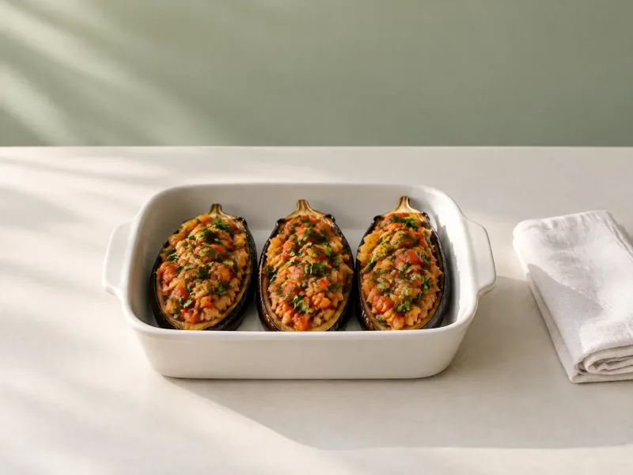
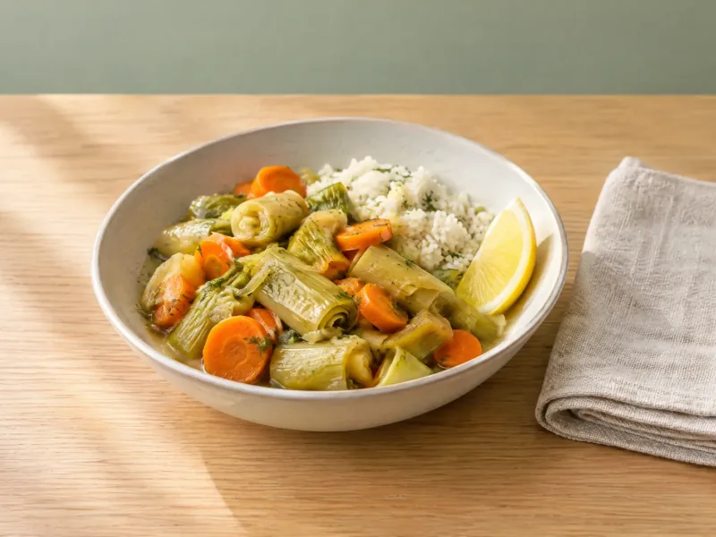
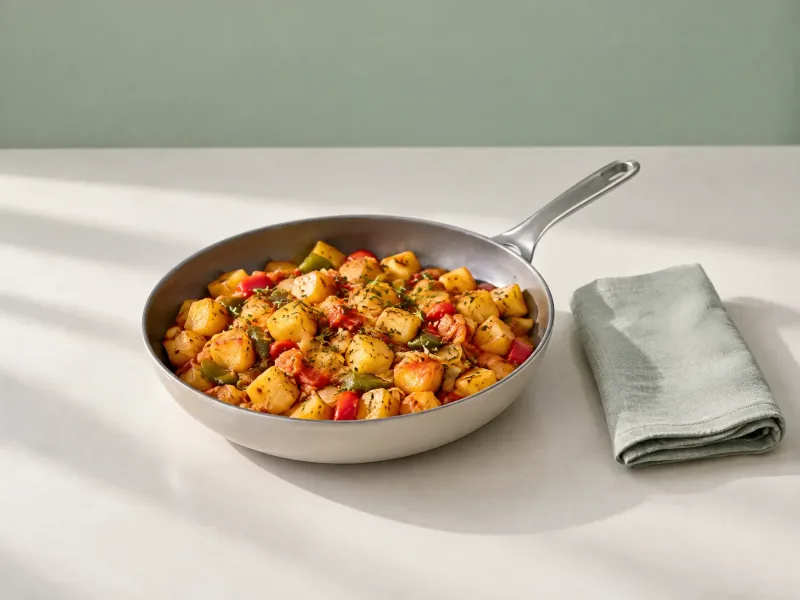
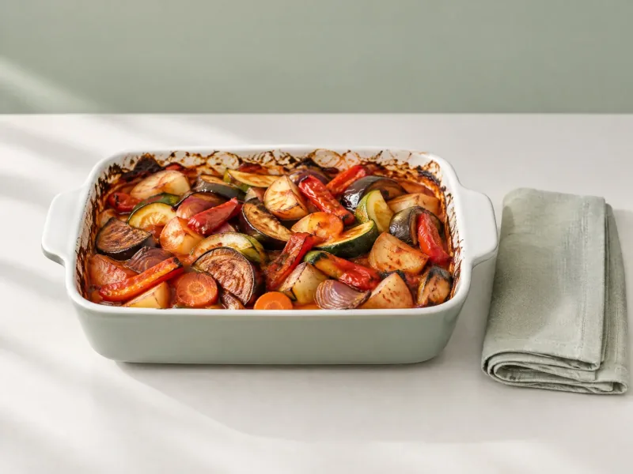

İmambayıldı
Patlıcanlar yağda sotelenmek yerine fırında yumuşar; zeytinyağı üçte birine iner, harca şeker eklenmez.
- 237 kcal
- porsiyon başı
- 75 dk
- toplam süre
- 4 kişilik
- porsiyon



Glütensiz yulaf, kraker ve ekmek seçenekleri.
Soğanlı, domatesli harç ve ağır ateşte yumuşayan patlıcan aynı kalır. Değişen, patlıcanın yağda değil fırında pişmesi.
Nasıl Yapılır?
- 1
Fırını 200 °C'ye ısıtın. Patlıcanları alacalı soyup tuzlu suda 15 dakika bekletin, kurulayın. Bir yemek kaşığı zeytinyağıyla fırçalayıp tepside, ara ara çevirerek yumuşayana kadar 20–25 dakika pişirin.
- 2
Kalan zeytinyağında soğanı yumuşayana kadar çevirin, sarımsağı ekleyin; domatesi, biberi, maydanozu ve tuzu katıp suyunu çekene kadar pişirin.
- 3
Patlıcanları ortadan yarıp açın ve harçla doldurun.
- 4
Patlıcanları fırın kabına dizin, sıcak suyu tabana ekleyin, üzerini kapatıp 180 °C'de patlıcanlar iyice yumuşayana kadar 25 dakika pişirin. Ilınınca servis edin.
Alerjen Notu
Bu tarifte AB alerjen listesindeki 14 alerjenden hiçbiri yoktur.
İpucu
Patlıcanları fırından çıkarınca birkaç dakika ters çevirip bekletin; fazla suyu akar, harç sulanmaz.
Neler Değişti
Patlıcanlar zeytinyağında sotelenmek yerine 200 °C fırında yumuşatıldı. Zeytinyağı ¾ su bardağından 4 yemek kaşığına indi. Harçtaki 1 çay kaşığı toz şeker çıkarıldı. Tuz 1 tatlı kaşığından 1 çay kaşığına indi.
Besin Değerleri
1 porsiyon · değerler tahminidir
Klasik tarif ≈ 481 kcal · bu tarif ≈ 237 kcal (porsiyon başına)
- Kalori
- 237 kcal
- Protein
- 4,4 g
- Karbonhidrat
- 18,8 g
- Yağ
- 14,4 g
Porsiyon başına, malzemelerin Besin Kütüphanesi değerlerinden hesaplanmıştır (TürKomp).
Her malzeme besin kütüphanemizdeki bir kayda bağlı; gramı ve değerlerin geldiği kaynak aşağıda.
- Patlıcan (uzun · çiğ) 750 g · besin kaydı · TürKomp — Ulusal Gıda Kompozisyon Veri Tabanı
- Soğan (sarı) 440 g · besin kaydı · TürKomp — Ulusal Gıda Kompozisyon Veri Tabanı
- Sarımsak 12 g · besin kaydı · TürKomp — Ulusal Gıda Kompozisyon Veri Tabanı
- Domates 369 g · besin kaydı · TürKomp — Ulusal Gıda Kompozisyon Veri Tabanı
- Sivri Biber 54 g · besin kaydı · TürKomp — Ulusal Gıda Kompozisyon Veri Tabanı
- Maydanoz 30 g · besin kaydı · TürKomp — Ulusal Gıda Kompozisyon Veri Tabanı
- Zeytinyağı 54 g · besin kaydı · TürKomp — Ulusal Gıda Kompozisyon Veri Tabanı
Toplam 1709 g · 4 porsiyona bölündü
Değerler malzemelerin besin kütüphanemizdeki kaynaklı değerlerinden hesaplanır; pişirme kayıpları dahil değildir.
Bu tarifin klasik hali Dada Gastro'da
Bu tarif, Dada Gastro'daki klasik tarifin hafif hâlidir; yemeğin kimliği aynı kalır, değişenler yukarıda.
Klasik tarife gitBunları da Seveceksin
Aynı kategoriden, sofrana yakışacak başka tarifler.

Zeytinyağlılar195 kcalZeytinyağlı Pırasa
Havuçlu, pirinçli zeytinyağlı pırasa; zeytinyağı yarım su bardağından 3 yemek kaşığına iner, pırasa ve havuç artar, şeker eklenmez.

Kahvaltılık220 kcalKahvaltı Patatesi
Biberli, salçalı baharatlı tava patatesi; patatesler önce haşlanır, zeytinyağı dörtte birine iner, tavaya fazladan biber girer.

Sebze173 kcalFırında Sebze Türlüsü
Fırında zeytinyağlı karışık sebze; yağ yarım su bardağından 3 yemek kaşığına iner, patatesin yarısının yerini havuç ve dolmalık biber alır.
Online market alışverişini planlamak
Yakındaki marketlerden aynı gün teslimat.
Bu Tarifi Kullanan Programlar
Bu tarif aşağıdaki beslenme programlarının öğünlerinde yer alıyor ya da onlara uygun.
Tarif değerleri tahminidir ve genel bilgilendirme amaçlıdır; tıbbi teşhis veya tedavi yerine geçmez. Alerjin ya da klinik bir durumun varsa bir diyetisyene danış.